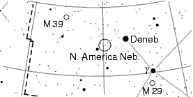

I change the label for Deneb, the alpha star in the Swan. At the moment, its label is a simple `\alpha'. But Deneb has a real name, and with
set_label_text CYG 50 Deneb
I change the label text to “Deneb”. This `CYG 50' is the
astronomical name for Deneb, see Denoting stars.
You can use that also for changing the label for a nebula:
set_label_text NGC 7000 "N. America Neb."
As said, please note that you have to enclose the label text in quotation marks if it contains spaces.
Now we get (only the changed part printed):

PP3 takes star names from a file. PP3's standard file
contains only the astronomical symbols for the stars (Bayer's Greek
letters and Flamsteed numbers), so if you want to have real star names,
you must use `set_text_label' as above. Or you use another star
data file with PP3, see Stars data file.